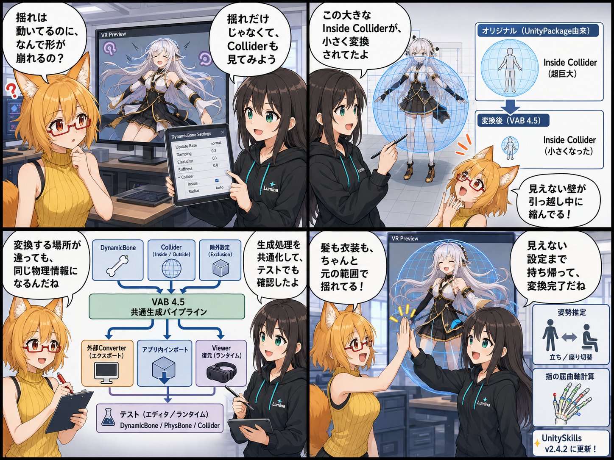

揺れものを守る「見えない壁」を、ちゃんと持ち帰る日
2026-08-01 の開発日記では、UnityPackageやPrefabからアバターをVAB 4.5へ変換したとき、髪や衣装の揺れを支えるDynamicBoneとColliderを、元の意図に近い形で復元するための改善を振り返ります。

集計期間には9コミットが入り、最終HEADは a69fe61（「DynamicBone変換とCollider復元を修正」）でした。未コミットの Distribution/ は、この日の完了実績へ含めていません。
今日の主題：揺れ方だけでなく、ぶつかり方も持ち帰る
アバターの髪や衣装を自然に揺らすには、揺れを計算するDynamicBone本体だけでなく、身体や衣装へ入り込まないようにするColliderの形・向き・大きさ・内外判定も重要です。
今回の修正では、UnityPackage由来のDynamicBoneをVABへ変換し、Viewerで再構築する経路を見直しました。特に、大きなInside Colliderが小さく丸められたり、内側を有効領域とする設定が別の形へ変換されたりすると、髪や衣装の形が崩れる原因になります。そこで、元コンポーネントの情報をできるだけ保持し、変換側と復元側の双方で同じ意味になるよう調整しました。
DynamicBone変換を専用処理として整理
Legacy DynamicBoneの情報を書き出す処理を専用クラスへ分離し、VAB 4.5生成時にBone、Collider、除外設定などを一貫して扱えるようにしました。
単に数値をコピーするだけでなく、外部Converter、アプリ内のUnityPackage取込、ViewerのRuntime復元という複数経路で意味が一致することが重要です。今回の修正では、この三つの経路をまたいで差が出ないよう、共通仕様とテストも追加しています。
巨大なInside Colliderを勝手に縮めない
Colliderには、外側へ押し出す一般的な形だけでなく、「この大きな領域の内側に留める」用途のInside Colliderがあります。
このColliderを通常の小さな球として近似すると、髪、スカート、アクセサリーなどが本来の範囲から外れたり、不自然な位置へ移動したりします。今回、非常に大きな半径やInside判定を持つColliderを検出し、その意図を維持したままVABへ保存・復元できるようにしました。
VAB 4.5生成処理を共通化
外部ConverterとViewer内の変換処理で別々に実装されていたVAB 4.5のBinary生成処理を共通化しました。
共通のRuntime Binary Coreへ集約したことで、片方だけが新仕様へ対応し、もう片方に古い挙動が残る危険を減らしています。セキュアなPayload、物理情報、シェーダー関連の互換処理も同じ基盤から扱える構成になりました。
アバター化にも姿勢推定を追加
VRで「アバターになる」機能には、HMDの高さや移動量から、立っている・座っている・低い姿勢になっている状態を推定する仕組みを追加しました。
自動判定に加え、立位・座位を明示的に切り替える設定も用意しています。Final IKへ渡す腰や脚の基準を姿勢に応じて調整することで、頭だけに全身が引っ張られたり、身体が上下反転したりする問題を抑えるための土台です。
指編集の曲げ方向をモデルから判断
右手・左手編集で指の曲げスライダーを動かした際、モデルによって指が軸方向へ回転してしまう問題も修正しました。
固定の回転軸を決め打ちせず、実際の指Bone配置とモデル形状から曲げ軸を算出することで、手の向きやアバターごとの差に強い処理へ変更しています。
ほかにも進んだこと
- UnitySkillsをv2.4.2へ更新
- 非表示Rendererを扱う非同期テストの待機を安定化
- ConverterでUnityバージョン差により変化したShader APIへ対応
- 配布用Converterの切り出し途中で混入した不要変更を戻し、正本構成を維持
- DynamicBone、PhysBone、Collider変換を検証するEditor／Runtimeテストを追加
4コマの裏話
今回は、ろひが「髪の揺れは入っているのに、なぜ形が崩れるの？」と首をかしげるところから始まります。ルミナがアバターの周囲にある透明なColliderを可視化すると、巨大なInside Colliderが変換後に小さくなっていることが判明。最後はDynamicBoneとColliderをセットでVABへ詰め直し、髪や衣装が自然な位置へ戻る流れです。
今日のまとめ
2026-08-01の記事対象期間では、DynamicBoneとColliderの変換・復元が大きく改善されました。見えるMeshやMaterialだけでなく、普段は見えない物理領域まで正しく持ち運べることが、アバターの見た目を保つうえで重要です。
同時に、VAB 4.5生成処理の共通化、姿勢推定、指の曲げ軸修正も進みました。アバターを変換する・表示する・自分で動かすという三つの領域が、それぞれ一段安定した一日です。
本日のひとこと
見えないColliderほど、消えたときの存在感が大きい。